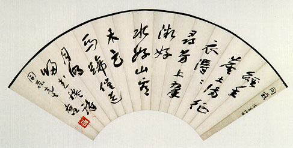

義助慰安婦
—— 李敖百件珍藏義賣藝術品（第15件）
品 名： A15. 于右任扇面 預估價： 8 萬 成交價： 24 萬 說 明： 「經年座上滿征衣，得得尋芳上翠微，好水好山看未足，馬蹄催送月明歸。」
這件是曾任監察院院長、黨國元老于右任寫給中央社社長蕭同茲的七言絕句。這件的特色有二：一是于右任的字早期寫得跟後來不一樣。這件是于右任早期寫的書法，很明顯受了魏碑的影響，比較少見。另一個特色在於扇面第一行「同茲 德生代求」，德生就是吳經熊，是中國有名的法學家，當時蕭同茲拿了空白扇面託德生向于右任求字，寫好之後沒有裱上扇骨，故第一行字尚保留著，是藝術品上的一個趣味。
